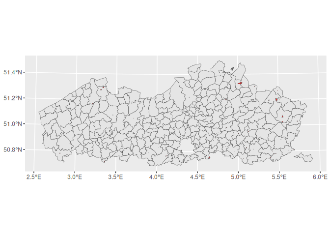

This package provides helper functions to download and load some Flemish public (geographic) reference datasets such as administrative units, as well as the public geographic datasets of the Flemish Heritage agency (agentschap Onroerend Erfgoed).
Installation
As we’re still working on our first CRAN releas, you can install the development version of roeference using devtools:
devtools::install_github('OnroerendErfgoed/roeference')Example
This package contains several functions for downloading specific reference datasets:
library(roeference)
# Get a Simple Features object containing the Flemish municipalities and
# their boundaries
municipalities <- get_vrbg_sf()
# Get a Simple Features object containing the Flemish municipalities and
# their boundaries
provinces <- get_vrbg_sf(collection = "Refprv")
# Get a Simple Features object containing the protected archaeological
# sites in Flanders and their boundaries
protected_arch_sites <- get_oe_aanduidingsobjecten(layer = "bes_arch_site")The functions provided in this package will take care of downloading and extracting the data. They will return a dataframe like object (DataFrame, Tibble, Simple Features object). which can be directly used in analysis or plotting.
library(ggplot2)
library(sf)
#> Linking to GEOS 3.14.1, GDAL 3.12.2, PROJ 9.7.1; sf_use_s2() is TRUE
p <- ggplot(protected_arch_sites) +
geom_sf(data = municipalities) +
geom_sf(fill = "red", alpha = 0.8)
p